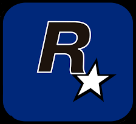

ROCKSTAR GAMES
Rockstar Games, Inc. (sometimes referred to as Rockstar NYC) is an American video game publisher, best known for their
Grand Theft Auto, Red Dead, Midnight Club, Max Payne, The Warriors, Bully, and Manhunt games.
Based in New York City, it was set up by Take-Two Interactive in December 1998, as successor to British video game publisher BMG Interactive Entertainment, a division of BMG Entertainment, from Bertelsmann, which was previously acquired. While some of the studios Take-Two Interactive has acquired have been merged into the Rockstar brand, several other recent ones have retained their previous identities and have become part of Take-Two Interactive's 2K Games subsidiary.